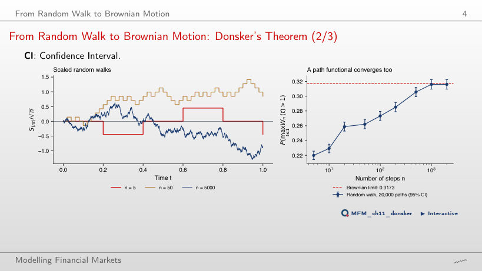
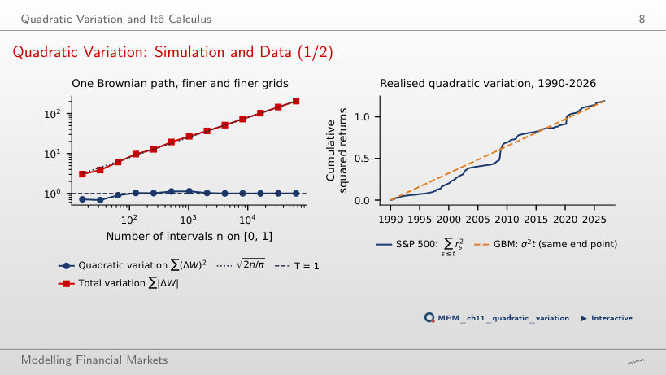
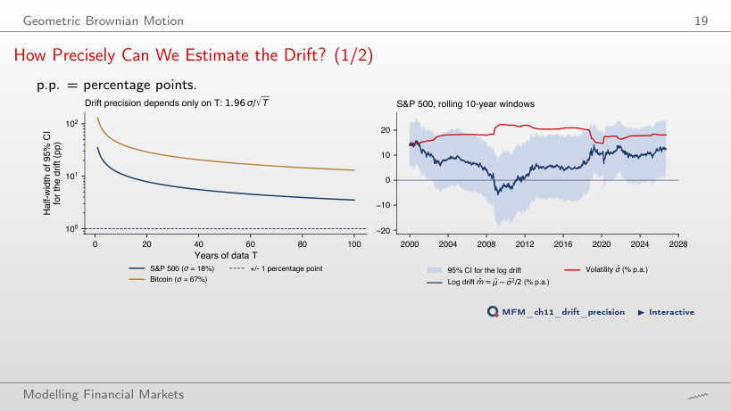
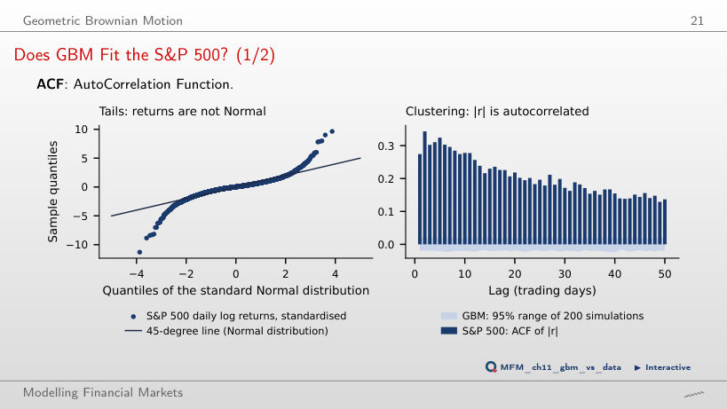
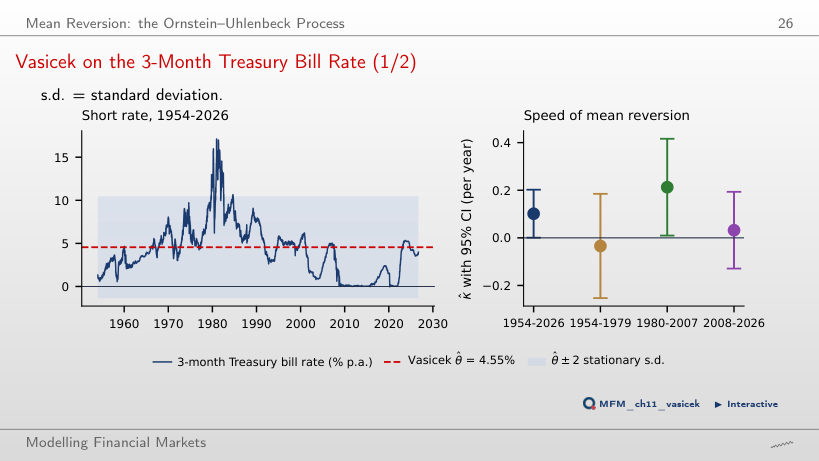
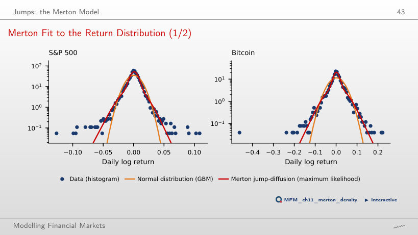
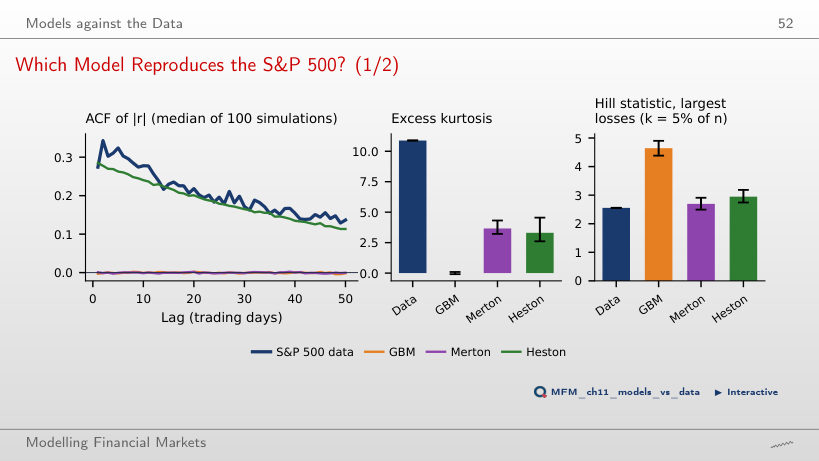
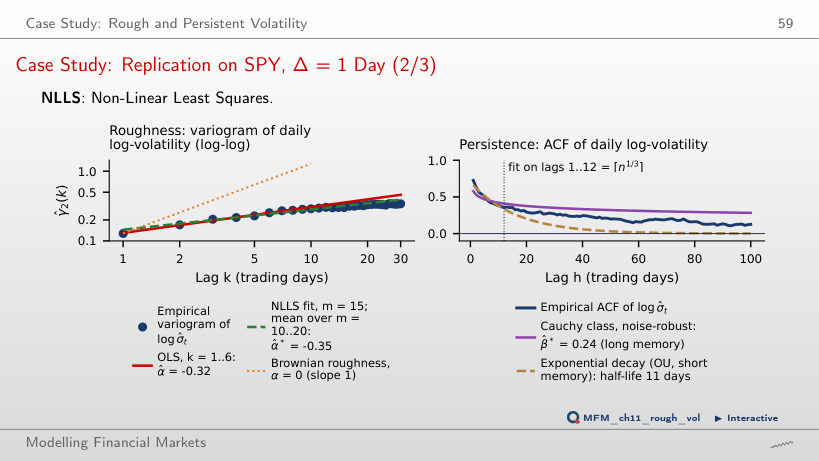

The slide of the lecture is on the left, the same figure on the right, computed in the browser from the same data. The ▶ button moves the parameter step by step.
From Random Walk to Brownian Motion · Quadratic Variation and Itô Calculus · Geometric Brownian Motion · Mean Reversion: the Ornstein–Uhlenbeck Process · Jumps: the Merton Model · Models against the Data · Case Study: Rough and Persistent Volatility
From Random Walk to Brownian Motion
From Random Walk to Brownian Motion: Donsker's Theorem

Answer
Smaller, on average. A coarse grid misses the maximum reached between observations: P(max W_n > 1) is 0.220 with n = 5 and 0.316 with n = 2,000, against the Brownian limit 2(1 − Φ(1)) = 0.3173. The gap closes slowly, at rate 1/√n.
Quadratic Variation and Itô Calculus
Quadratic Variation: Simulation and Data

Answer
The mean of the sum is n^(1−p/2)·E|Z|^p. For p < 2 the sum grows without bound (the total variation, p = 1, reaches 205 with 65,536 intervals), for p = 2 it tends to T = 1 (1.006 on the finest grid), and for p > 2 it tends to zero. Only the exponent 2 gives a non-degenerate limit, hence (dW)² = dt.
Geometric Brownian Motion
How Precisely Can We Estimate the Drift?

Answer
The 95% interval has a half-width of about ±11 percentage points, however fine the grid, because the standard error is σ/√T. On 10-year windows the log drift ranges from −6.0% (2009-03) to 15.8% (2000-09), mostly noise; a precision of ±1 point would need 1,243 years of data.
Does GBM Fit the S&P 500?

Answer
About 0.59. The data have 62, and the worst day lies at −11.3 standard deviations; the excess kurtosis is 10.9. The ACF of |r| is 0.27 at lag 1 and 0.14 at lag 50, while the GBM band stays below 0.024.
Mean Reversion: the Ornstein–Uhlenbeck Process
Vasicek on the 3-Month Treasury Bill Rate

Answer
No. κ̂ = 0.101 (SE 0.051) means a half-life of 6.8 years, and the daily AR(1) coefficient is 0.99960, almost a unit root. Over subperiods κ̂ is −0.034, 0.213 and 0.032, and two of the three intervals include zero. The bootstrap test of the random-walk null gives a p-value of 0.287.
Jumps: the Merton Model
Merton Fit to the Return Distribution

Answer
No. The jumps are small (standard deviation 1.44%) and account for 71% of the variance; the model uses them to mimic changing volatility. The implied excess kurtosis is 3.7 against 10.9 in the data, and the most extreme days stay beyond both curves.
Models against the Data
Which Model Reproduces the S&P 500?

Answer
Only Heston, with the VIX-based parameters: its simulated ACF of |r| follows the data, while GBM and Merton give autocorrelations around zero. Merton matches the Hill statistic (2.70 against 2.56) and the skewness, but no model reaches the excess kurtosis of the data, 10.88.
Case Study: Rough and Persistent Volatility
Case Study: Replication on SPY, Δ = 1 Day

Answer
No. Fitted on the first 12 lags, OU has a half-life of 11 days and implies an autocorrelation of 0.002 at lag 100, against 0.13 in the data. The Cauchy class gives β̂ = 0.26 and β̂* = 0.24, both below 1, consistent with long memory; the variogram gives α̂ = −0.32 (OLS) and −0.35 (NLLS), a path rougher than Brownian motion.
Daily log returns up to 18 September 2026: S&P 500 (from 1990) and Bitcoin (from 2014), EODHD prices. 3-month US Treasury bill rate: FRED, series DTB3, 1954–2026. Case study: SPY 5-minute bars, EODHD, October 2020 – September 2026. The simulations (random walk, Brownian motion, GBM, Merton, Heston) use the same seeds as the charts of the lecture.